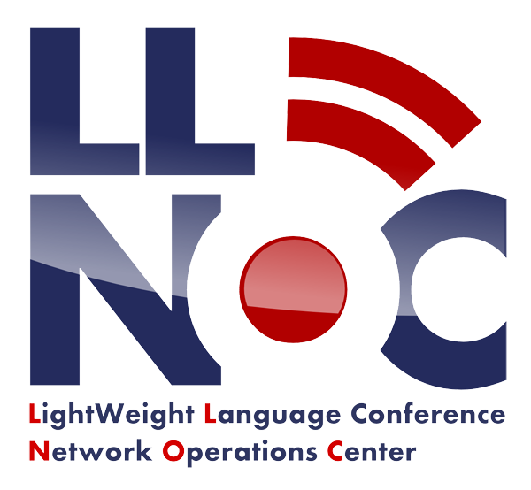

目次
- 当日の会場ネットワーク
- 利用しているネットワーク機器
- LLNOC
当日の会場ネットワーク
会場では無線LANが利用可能です。SSIDは以下のとおりです。
| SSID | 種別 | 備考 |
|---|---|---|
| lldecade-highspeed | 11a | 11a対応端末をお持ちの方はなるべくこちらをご利用ください。 |
| lldecade | 11g |
- 10時頃の開通を予定しています。
- どちらのSSIDもWEPで保護されています。WEP Keyは当日パンフレットを参照ください。
- 会場内でポータブル無線AP(モバイルルータなど)のご利用はお控えください。
- 端末・通信のセキュリティは、ご自身で対応をお願いします。
- 会場内に無線APを設置しますので触らないようにお願いします。また、床・壁面にLANケーブルを養生しますのでこちらも触らないようにお願いします。
- 会場のネットワークは接続数・通信量・DNSなどをモニタしています。個人を特定可能な情報は収集しません。収集した情報はLL実行委員会・LLNOCの内部で用いられる他、会場ネットワークに関する外部への報告・発表に用いられることがあります。
利用しているネットワーク機器
LL Decadeの会場ネットワークは以下の各社様にご提供いただいた機器で構築しています。この場を借りて御礼申し上げます。
- アライドテレシス株式会社様
- 無線AP AT-TQ2450 14台と管理サーバ
- PoE給電スイッチ AT-x610-48Ts/X-POE+・AT-x600-24Ts-POE 1台ずつ
- エクイニクス・ジャパン株式会社様
- インターネット回線
LLNOC
会場ネットワークはLLNOCチームが構築、管理をしています。
LL Decade会場ネットワークに対するご要望、ご相談などは@llnocteam、もしくは受付・お近くのスタッフまでお願いします。

また、LLNOCメンバーが君ならどう書く Onlineも担当していますのでこちらもよろしくお願いいたします。